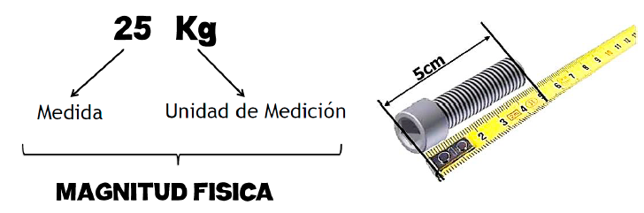
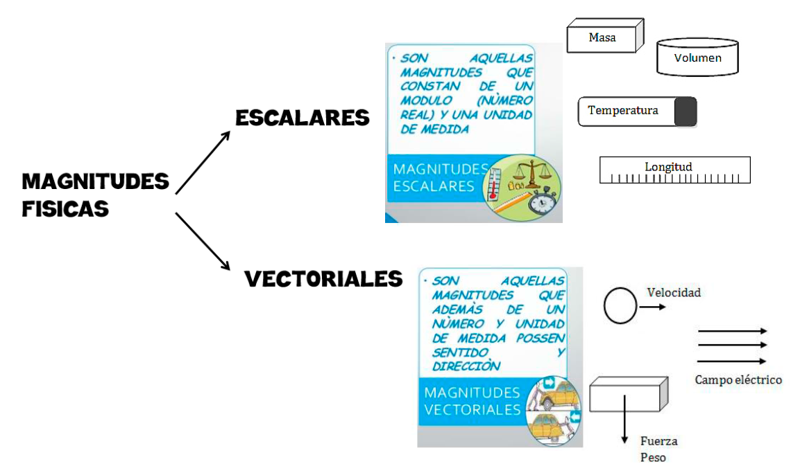
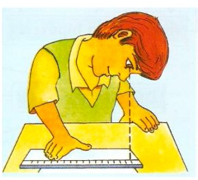
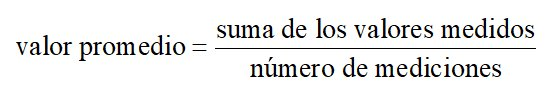

🔭 ¿Qué es la Física?
LA FÍSICA ES LA CIENCIA NATURAL QUE ESTUDIA LA MATERIA, LA ENERGÍA, EL ESPACIO Y EL TIEMPO, Y CÓMO ESTOS SE RELACIONAN ENTRE SÍ.
🌦️ Fenómeno Natural
UN FENÓMENO NATURAL ES TODO CAMBIO O TRANSFORMACIÓN QUE OCURRE EN LA NATURALEZA Y QUE PUEDE SER OBSERVADO Y ESTUDIADO.
🏃 Movimiento de un objeto 🌧️ Caída de la lluvia 🌈 Formación de un arco iris
📐 Magnitud Física
UNA MAGNITUD FÍSICA ES CUALQUIER PROPIEDAD O CARACTERÍSTICA DE UN OBJETO O FENÓMENO NATURAL QUE PUEDE SER MEDIDA Y CUANTIFICADA.
📏 Longitud de una mesa 🚗 Velocidad de un auto 🌡️ Temperatura de un cuerpo

Tabla de magnitudes físicas
🗂️ Clasificación de las Magnitudes
🔢 1. Por su ORIGEN
Magnitudes Fundamentales: se definen por sí mismas y no dependen de otras magnitudes. Sirven de base para el resto.
metrogramosegundo
Magnitudes Derivadas: se definen mediante la combinación matemática de dos o más magnitudes fundamentales.
m²km/h

Ejemplos de magnitudes fundamentales y derivadas
🧭 2. Por su NATURALEZA
Magnitudes Escalares: se describen completamente con un valor numérico y una unidad de medida.
🌡️ Temperatura: 39°C⚖️ Masa: 50 kg
Magnitudes Vectoriales: además del valor y la unidad, necesitan una dirección y un sentido para estar completamente definidas.
💨 Velocidad💪 Fuerza
📏 ¿Qué es Medir?
MEDIR ES COMPARAR UNA CIERTA CANTIDAD DE UNA MAGNITUD FÍSICA CON OTRA CANTIDAD DE LA MISMA NATURALEZA, CONOCIDA COMO UNIDAD DE MEDIDA, PARA DETERMINAR CUÁNTAS VECES ESTA UNIDAD ESTÁ CONTENIDA EN DICHA MAGNITUD.
💡 Medir es determinar CUÁNTO (un número) y DE QUÉ (la unidad de medida).
🔍 Aspectos que intervienen en toda medición:
La persona que realiza la medición.
Cinta métrica, balanza, termómetro, etc.
Longitud, masa, volumen, etc.
La cantidad de referencia con la que se compara.

🛠️ Instrumentos de Medición
LOS INSTRUMENTOS DE MEDICIÓN SON DISPOSITIVOS DISEÑADOS PARA CUANTIFICAR Y REGISTRAR LA MAGNITUD DE UNA DETERMINADA PROPIEDAD FÍSICA. SU FUNCIÓN PRINCIPAL ES PROPORCIONAR MEDICIONES PRECISAS Y CONFIABLES.
⚠️ Errores de Medición
LOS ERRORES DE MEDICIÓN SON DISCREPANCIAS ENTRE EL VALOR MEDIDO Y EL VALOR VERDADERO DE UNA MAGNITUD.
- Los instrumentos: poco precisos, mal calibrados o dañados.
- La cantidad de materia: demasiado pequeña o grande, su forma, etc.
- El observador: lectura incorrecta, confundir valores o unidades.
- Las condiciones ambientales: iluminación, temperatura, vibraciones.

🇦🇷 El SIMELA
EL SIMELA O SISTEMA MÉTRICO LEGAL ARGENTINO ES EL SISTEMA DE UNIDADES VIGENTE EN ARGENTINA, DE USO OBLIGATORIO. FUE ESTABLECIDO EN 1972.
Está constituido por las unidades, múltiplos y submúltiplos, prefijos y símbolos del S.I. (Sistema Internacional de Unidades).